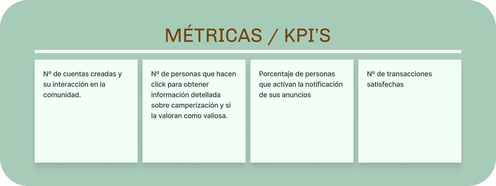
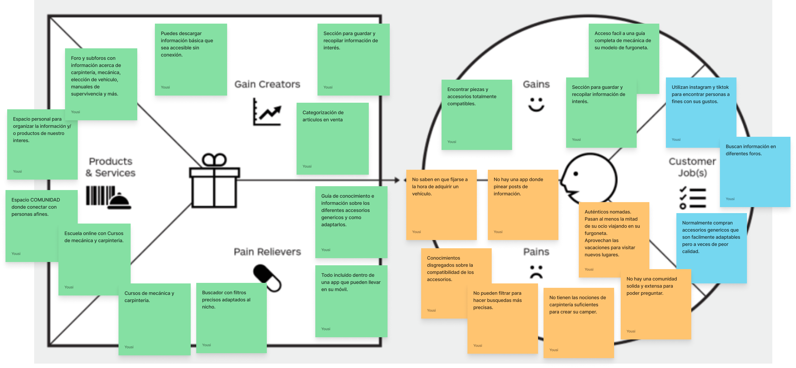
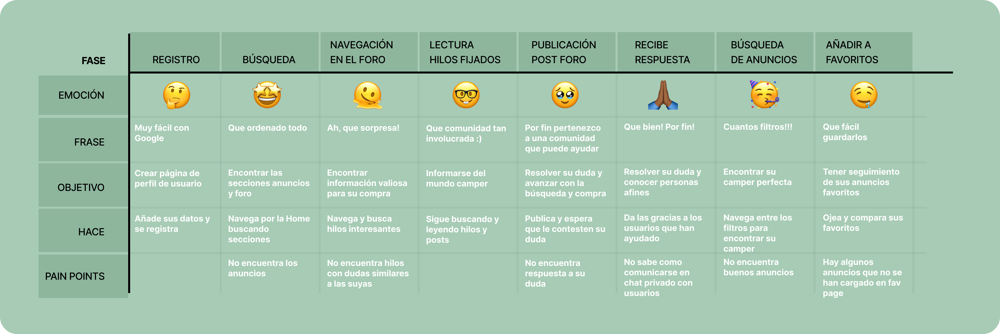

Proyecto UX
Nomad App. Mobile app.
Proyecto de diseño de experiencia de usuario. Una solución para todos los nómadas aficionados a las campers que necesitan una sola app donde comprar, vender y encontrar informarción sobre las furgos.
Noviembre - Diciembre 2022 // Figma.
NomadApp es un proyecto digital que nace a raíz de la necesidad de nuestros usuarios de pertenecer a una comunidad honesta, implicada y concienciada.
La necesidad en sí, es más amplia y es que no existe un lugar unificado que aúne documentación y compra venta, por lo que la solución ha sido crear un lugar donde comprar y vender furgonetas, campers y la infinidad de accesorios que pueden acompañarlas, de forma segura, estando informado y pudiendo apoyarte en otros usuarios de mayor experiencia.
Primeros pasos.
El punto de partida es tener en cuenta las cartas con las que empieza el proyecto. Desde donde partimos y a donde vamos. En primer lugar tenemos las necesidades que queremos cubrir, los motivadores de los que podemos hacer uso para la captación de clientes.
Por último el próposito, que va más allá, habla del fin último de NomadApp.
Los motivadores y el punto fuerte con el que mostrar NomadApp al mundo, sin duda es que es proporciona un acceso rápido a un buscador de venta unificado con filtros adaptados al nicho. Y como próposito principal, facilitar la transición de sedentario a nomada para todas las personas, indistintamente de como lo hagan.

Benchmark.
SURFMARKET. Es una web de productos deportivos de surf, ski y deportes de aire libre de segunda mano que ha incluido las furgonetas y campers dentro de su modelo de negocio porque normalmente quién práctica estos deportes tiene una furgoneta de la que hace uso de camper.
MUNDOVAN. Es una web de compraventa de caravanas y furgonetas. No tiene filtros de busqueda adaptados al nicho ni ofrece la posibilidad de anunciar accesorios.
M3CARAVANING. Es una web de venta de caravanas y furgonetas nuevas y de segunda mano. Tiene un apartado de accesorios que no funciona. También venden como proveedor.
Value Proposition Canvas.
En este caso, el Value Proposition Canvas nos permite analizar y visualizar cómo la propuesta de valor se alinea con las necesidades del cliente, identificar oportunidades de mejora y desarrollar estrategias para destacarse en el mercado.
User Persona.
Norman, de 28 años, amante de los perros, tiene una tienda online de productos veggies. Sueña con tener una camper para viajar por Europa con su perro. Le gusta cocinar, tocar la guitarra y pasear con su perro. Busca una furgoneta asequible y necesita información fiable y filtrada para tomar una decisión de compra.
Carlos Camper, de 30 años, amante de la vida al aire libre y los deportes en playa y montaña. Desarrollador remoto, pasa días en su camper viajando. Habilidoso en carpintería y ayuda a amigos con trabajos. Busca una comunidad para compartir intereses en fotografía, carpintería, viajes y furgonetas. Considera actualizar su camper pero le cuesta encontrar compradores potenciales. Desea sacar provecho de sus habilidades en carpintería y mecánica.
User Journey Map.
Para hacer el User Journey Map, he tenido en cuenta uno de los procesos más importantes para los usuarios, y es que con Nomadapp creamos una app en la que no solo puedes comprar y vender todo lo relacionado con el mundo de las campers, sino que puedes informarte y adquirir conocimientos creados por la comunidad. Esto permite a los usuarios hacer compras más conscientes y adaptadas a sus necesidades.
Wireframes.
Los wireframes de Nomad App muestran como he dividido la Home en 2 secciones a las que puedes acceder y navegar directamente desde el dashboard. Además he añadido un filtrado rápido con iconos para ser más preciso en la búsqueda aún sin aplicar los filtros.
Conclusiones.
Después de toda la investigación necesaria para abordar un proyecto así, y teniendo en mente cuales son los procesos principales, llega el momento de diseñar y conseguir que aún teniendo 2 secciones de gran peso e igual importancia el diseño sea accesible y sencillo. De esta manera, el resultado final se compone de una home doble con dos pestañas superiores con las que podemos acceder tanto a la seccion de anuncios de productos como a la sección de documentación y foro. Para ser consistente con el diseño la decisión ha sido mantener esta duplicidad también en la sección favoritos y así tener organizada toda la información.